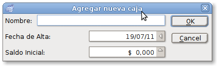
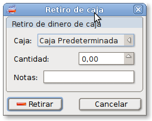
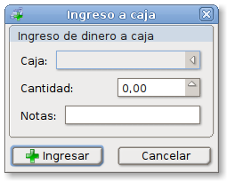
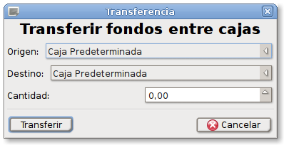
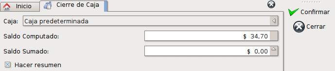
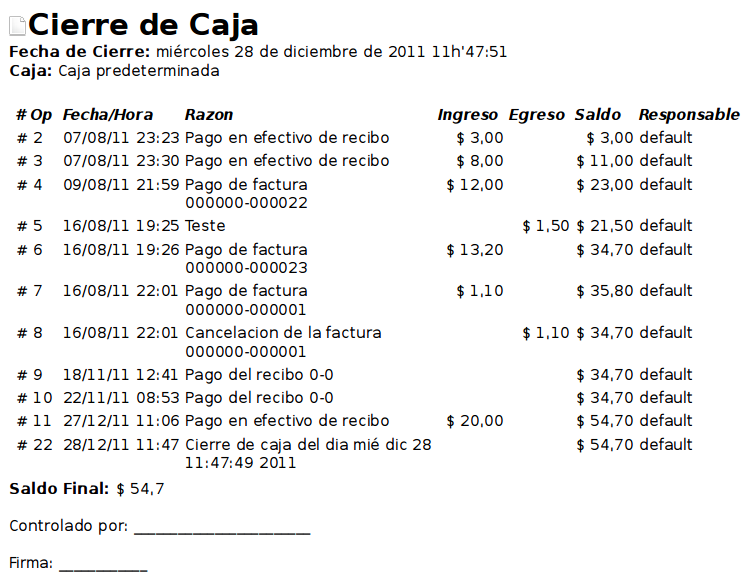

El complemento de administración de cajas le permitirá administrar una o más cajas y llevar el control de las operaciones de ingreso y egreso.
Dentro de las acciones posibles en una caja están las siguientes:
- Ingreso: Se coloca efectivo en una caja sin que provenga de una factura de contado o un recibo.
- Egreso: Se retira efectivo de una caja sin que se produzca por un gasto o una compra.
- Transferencia: Se retira efectivo de una caja colocándolo en otra caja distinta.
- Cierre de caja: Se realiza un conteo de la cantidad que hay realmente en la caja y se la compara con la cantidad registrada en el programa.
Se puede acceder a todas las cajas declaradas en el programa a través del menú Herramientas -> Caja -> Cajas.
Allí encontrará el listado de las cajas actuales del sistema con las acciones que puede realizar sobre ellas.
Agregar
Esta acción le abrirá la ventana que le permitirá agregar una caja nueva.

Para agregar una nueva caja, ingrese el nombre que la identificará, la fecha en que desea que las operaciones de caja comiencen y el saldo inicial que tendrá esa caja.
Cuando presione el botón OK se agregará la nueva caja y se generará el movimiento inicial para colocar el saldo especificado.
Si presiona Cancelar no se realizará ninguna acción.
Retiro
Ésta acción le permite agregar un retiro de efectivo. Al acceder a la acción le aparecerá la siguiente pantalla:
En esta ventana puede seleccionar la caja de la cual se realizará el retiro.
En el campo de cantidad se deberá ingresar la cantidad de efectivo que se desea retirar.
Se podrá agregar además notas como recordatorio, las cuales serán agregadas a la descripción del movimiento de caja.
Ingreso
Esta acción le abrirá la ventana que le permitirá ingresar dinero en efectivo a una caja.
Se deberán seleccionar la caja a la cual se desea ingresar el dinero y la cantidad que se desea ingresar.
Se podrá ingresar además una nota que se agregará en el registro de operación que aparecerá en el resumen de caja.
Al presionar Ingresar se generará la entrada en la caja y se ajustará el saldo actual.
Si presiona Cancelar no se realizará ninguna acción.
Transferencia

Con esta acción podrá generar un movimiento de efectivo entre cajas declaradas en el sistema.
Seleccione la caja de origen, de la cual se hará un retiro, y la caja de destino, la cual obtendrá un ingreso por la cantidad que especifique en Cantidad.
Al presionar el botón Transferir se realizará la transferencia y se actualizarán los saldos de las cajas correspondientes. Si presiona el botón Cancelar no se realizará ninguna acción.
Cierre de caja

Con esta acción podrá generar un cierre de una caja y permite ingresar el conteo del dinero que se encuentra en ella para compararlo con el conteo que se lleva dentro del programa y ver las diferencias eventuales que existan.
Si al ingresar el saldo contabilizado del dinero en el campo de Saldo Sumado este no coincide con el saldo computado no se permitirá realizar el cierre según las preferencias que se hayan elegido.
La opción de Hacer Resumen permite generar un documento imprimible con el resumen de todas las operaciones de caja que se hicieron desde el útimo cierre para control y rendición.
Las opciones del resumen y sus elementos estarán controladas por las preferencias.
Aqui se ve un ejemplo del resumen de caja generado:

Resumen
Esta acción le mostrará el listado de las operaciónes que se han llevado a cabo con los fondos de una caja. Recuerde seleccionar una de las cajas de la lista para conocer sus movimientos.
Una ventana como la siguiente aparecerá:
Allí podrá ver la fecha y hora del movimiento, si fue un ingreso o egreso desde la caja que está viendo, la razón por la cual se realizo la operación y quién fue puesto como responsable de la operación si esta característica esta habilitada por usted en las preferencias.
Desde esta ventana también podrá realizar operaciones de retiro e ingreso hacia la caja a la cual esta viendo su resumen.